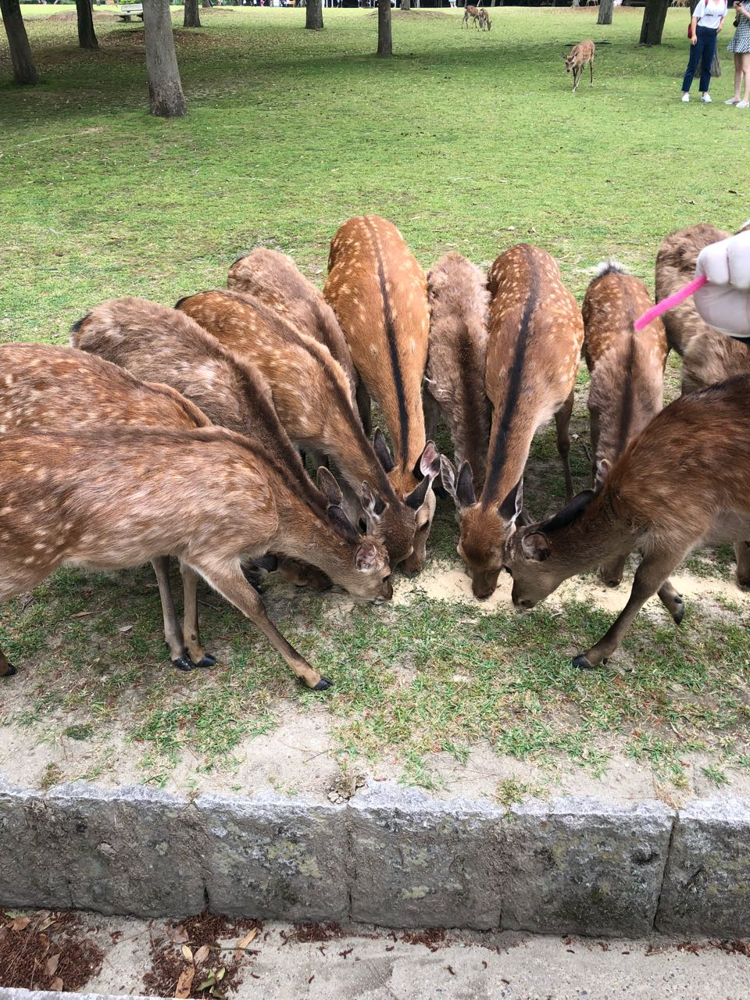
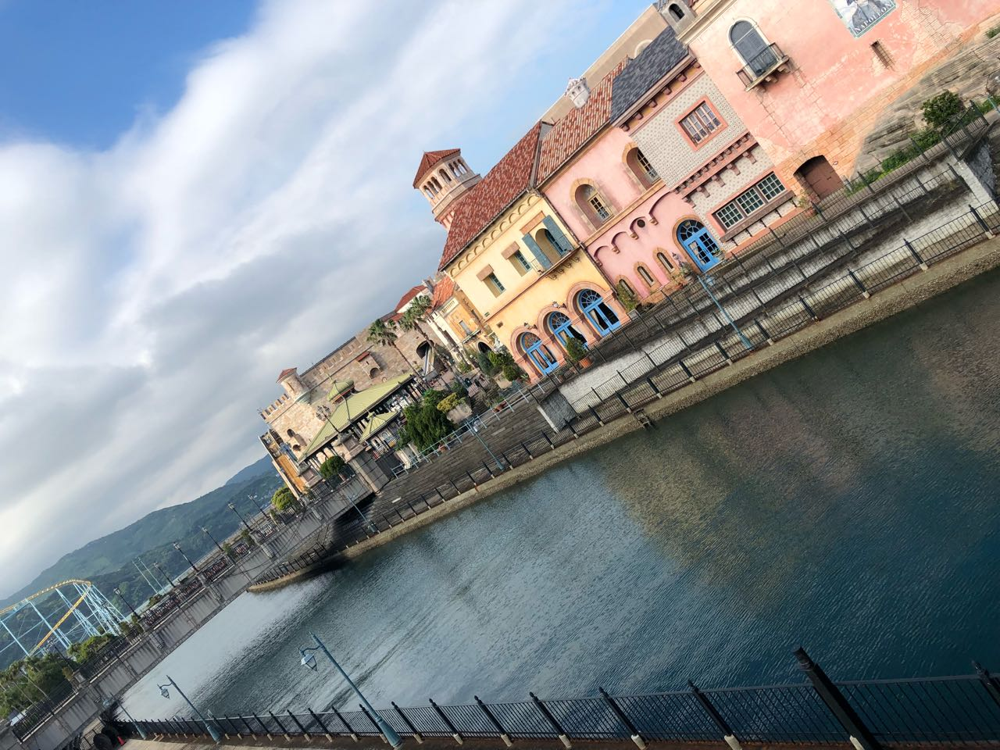
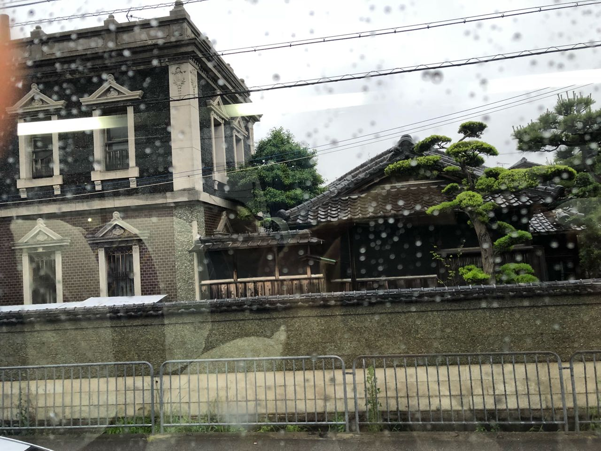
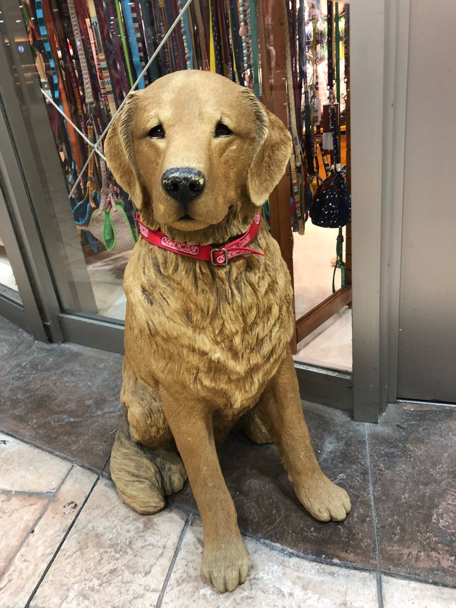
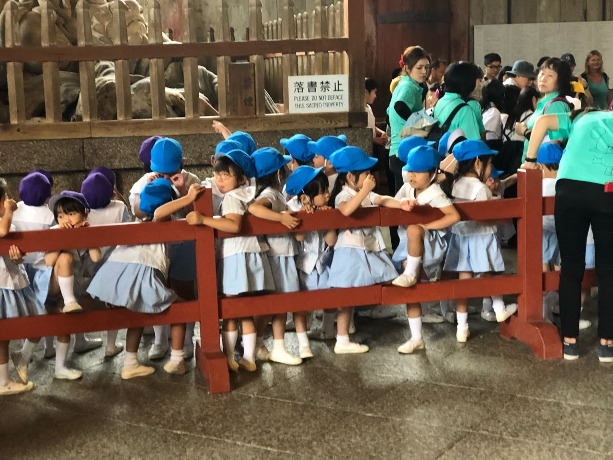
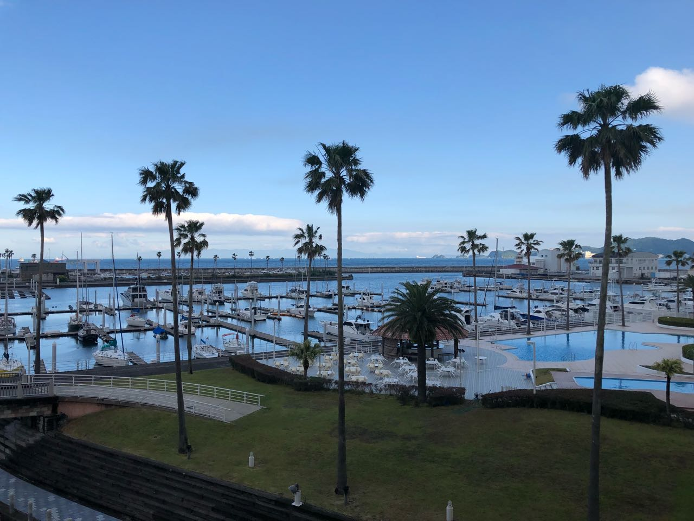
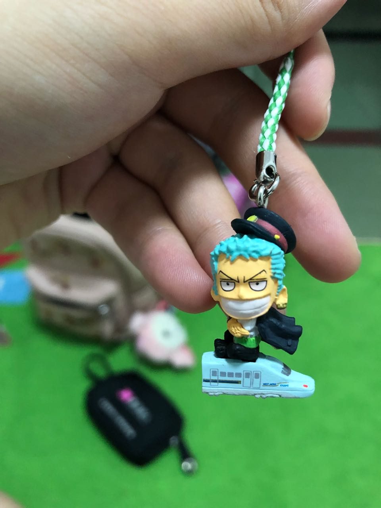
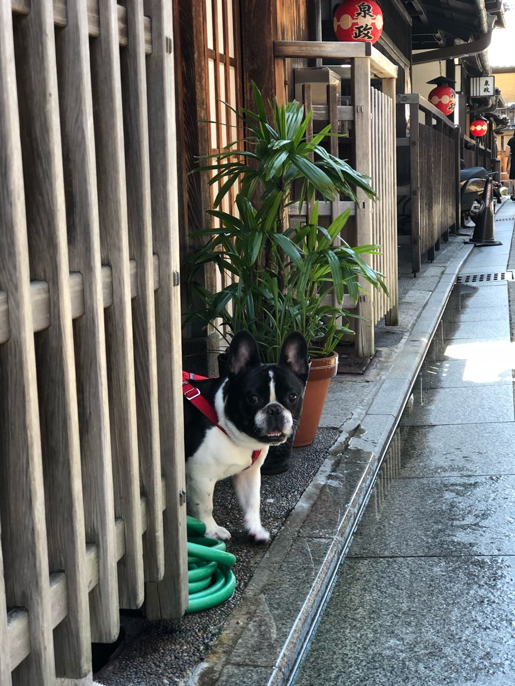

其实啊，旅行的意义，不一定要是路上的风景，更是你路上的同行人。 2018年5月23 到 27 我在日本。
TOP 10
- 干净整洁的日本街道
- 暖心负责的领队小哥哥 💖
- 有趣有爱的同伴 🚚
- 梅田的购物中心 ❄️
- 250 的牛肉自助餐
- 大阪大学的王者荣耀
- 帅气的日本小哥哥
- 老龄化的日本 💳
- 好（第四声）吃可爱的小鹿
- 最爱的许加二和涛哥 🍒
最爱的图片

或许是太久没有机会跟动物接触了。看到她们简直不能自拔，好想一直喂她们东西吃。上网查了下，她们的点头要吃的，实际在动物界并不是表示友好的行为，越爱鞠躬的小鹿，其实攻击性就越强。但是啊，她一点头，你就不舍得不给她吃东西。

上面这张图片，是第一天酒店起来后，我跟室友去外边逛的时候拍的。小河特别干净，房子颜色特别美。

这张图片是第一天赶到酒店的时候，天下起了小雨，外边有像大熊家一样的房子🏡。觉得特别的舒服。

小狗过得不开心吗？为什么眼里会有悲伤和难过。

猜猜我想拍的小朋友是？

白色的船，蓝蓝的海，高高的树，白色的桌子和椅子，绿色的山。（原谅我的语文水平，只能描述成这种水平了）

吃相扑餐的时候，不好吃。也没有吃饱😞。但是看在送了我 索隆 的份上，5星好评。

其实，印象最深的不仅仅这个小狗，还有他的主人。主人大概60岁，我看狗狗的时候，他冲我笑了下，然后说了一串我听不懂的日语。可能是在说，没关系，你可以摸摸它，他不咬人。
最值得的事情
最值得的事情，当然就是见到徐佳2啦。看着她那个乱的跟猪圈一样的宿舍，我觉得是时候要给她爸爸打报告了，怎么越长大越乱了呢？ 以前我们宿舍4个，她还算排倒数第2的，现在肯定是倒数第1了。
见得时间太少了，已经尽我最大的能力去挤时间。以后要是还去日本，我一定自由行，然后每天都跟她睡。白天一起逛吃逛吃，就像我们一起大学的时候那样。
一个人在外，那种无助的时候，肯定很多。赶紧回国，带你吃小龙虾。💗
在我去日本的时候，涛哥他们部门的团，也正好在日本了，所以很不容易的，我们在日本也见到了，他们为了顺应我的时间，时间很紧张。我们的缘分，肯定还要持续很久，很久🌲。
路痴的我
如果是不赶的路程，我肯定是一个人慢慢悠悠的找地方玩了。就算迷路了也不要紧，反正总能找到回家的路。但是跟团不一样，一定要保证大家不会因为我耽误时间。所以整个路程我就是根本摸不清东南西北。还好有徐佳2，小智和yunhui。
认路这件事，有时候真的感觉无能为力。☹️
购物
给妈妈他们买了两双鞋子，还给嫂子买了很多护肤品，还给同事带了很多护肤品。给爸爸买了个表，哥哥啥都没给买。哈哈，他肯定怀疑我不是亲妹妹。不过，我给他即将出生的小宝宝，买了衣服。给自己还买了很多面膜。
通过买东西这件事情，告诉了我一定要努力工作，然后赚很多钱。
第一天晚上，吃了很好吃的冰淇淋🍨。超级开心。还喝了很便宜很好喝的酸奶，日本的便利店🏪是个好地方。
路上的人儿
我这次的室友不是跟我一个部门的。当我提出，能不能徐佳2跟我一起住一晚上的时候，她马上就答应了。真的好谢谢。已经是两个孩子的妈妈了，然而一点都看不出来。👍
我的领队，是跟我一个部门的，但是以前从来没有见过，可能是没有工作上的交集，我们通常称呼他为小智。小智非常的靠谱，也是个超级暖心的小哥哥，每次都帮大家把事情安排的很好。不知道他自己有没有玩好。每次找不到地方了，就跟他打电话。他还每次都帮我提行李。觉得好温暖。笔芯。💖
yunhui, 是跟我一个部门的，以前没有见过，但是有问过他问题。他非常的爱笑，感觉一笑起来，让别人也会开心。yunhui 绝对是个旅行的好伙伴，有足够的好奇心，也有足够的耐力。攻略也做的很棒，关键是也认路。📚
我师父，jiaqian, 飞哥，赵宣，咸鱼, amy， tina就不说了，以前都很熟了,因为他们在，让我觉得这次旅行，一点都不陌生，也不拘谨。
村长，第一次跟他说了话，感觉好开心，还记得他那次诸葛亮把我们整个组虐的超级难受。总算是认识真人了。
日本的小姐姐都说话很小声，很有礼貌。日本的学生都穿制服，感觉很好。很帅气。😊
日本老奶奶跟我说谢谢的时候，我好想回她不用谢。但是憋了半天，满脸通红，还是一个字都没挤出来。
第一天晚上的酒店的小姐姐，想把伞还给她，一路上，想了半天怎么还给她，结果到了那里，一个字都没有说出来。☹️
我们的导游，朴岛很温和，已经加了他微信，加了后，整个朋友圈，都是代购的消息了，哈哈。朴导萌萌哒。✈️
总结
很开心的一次旅行，虽然信用卡💳都没知觉了。一生会有很多旅行，但是这次肯定是独一无二的。你遇到的风景，你遇到的人，你拍的照片，你脑海里那个爷爷的微笑，你对某些人的感情，又或者是旅行中不那么顺利开心的地方，都是旅行的宝贵所在。
我有的时候想，人生那么不可预测，也许明天你就没有机会去体验很多事情。所以你今天做的事情，会不会是最后一天你想做的事情。不要后悔。也不要遗憾。因为上帝给你留下的路，都是有他的道理。开心的，不开心的，它都是你生活中，或者说命运中的一部分。
我相信 connecting the dots。 ❤️ 🚚 📚 以后有机会跟家人一起去。